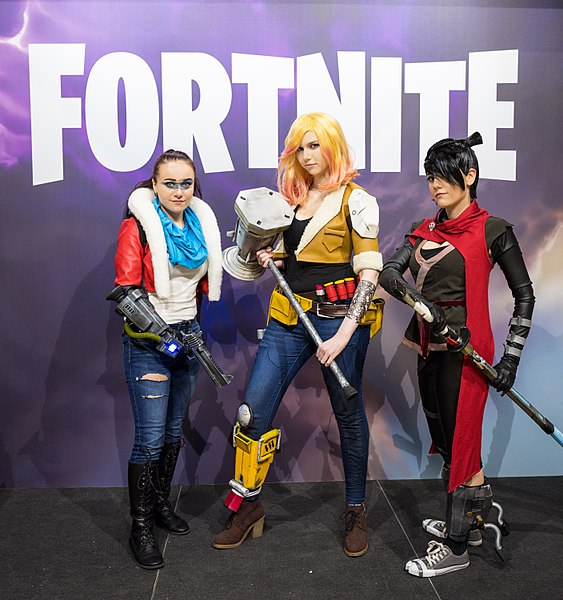

This work is licensed under a Creative Commons Attribution 4.0 International License.
Fortnite is a battle royale game that allows you to play with people all around the world. Fortnite has customization options, a large map to play on with 99 other players, and weekly updates. Fortnite can be a difficult game to adapt to since it has been out for a while and many players have become pros at the game. However, this guide will help you get started and hopefully lead you to a win in the end.
Credits to Sergey Galyonkin from Berlin, Germany CC-BY
There are five rarities for the weapons in Fortnite. Common, Uncommon, Rare, Epic, and Legendary. Of course, you will want to have a legendary weapon in your inventory as this is the best out of all five. In the beginning, chances are you will find low rarity weapons (common/uncommon), however that does not mean you won't get lucky and find an epic or legendary weapon hiding away.
Fortnite allows players to change the way their character looks by using skins. These of course cost money, V-Bucks, and will take money out of your wallet in a hurry if you are not careful. I personally do not recommend buying every skin you see come out, because just like the weapons there are different rarities meaning they cost you more with better rarity.
In game you are to collect resources, wood, stone, and metal, this will allow you to build bases to protect yourself from enemies. Your best bet is to grab all your weapons in the beginning of the game and go straight to farming resource (watch for enemies of course). This will in turn help you become a better player by knowing how to properly protect yourself
My only tip for you: AVOID TILTED TOWERS AS BEGINNER!!!
This work is licensed under a Creative Commons Attribution 4.0 International License.